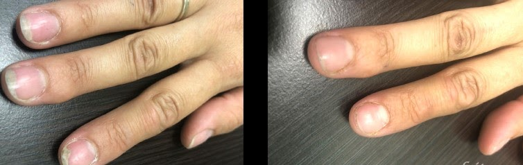

Der Pilz, der mein Leben ruiniert hat: wie ich meine Frau und meine Gesundheit verlor, es aber schaffte, herauszukommen! Ich teile meine Erfahrungen mit Ihnen

Hallo, mein Name ist Stefan, und meine Geschichte hat Sie vielleicht erschreckt, aber ich hätte fast mein Leben durch einen gewöhnlichen Fußpilz verloren. Wie ist das möglich? - Wenn Sie mich fragen. Ich selbst hätte nie gedacht, dass so eine Kleinigkeit ein Leben ruinieren könnte.
Alles begann, als ich eine leichte Verdickung auf meinen Nägeln bemerkte. Zuerst habe ich ihm nicht viel Bedeutung beigemessen, aber mit der Zeit begann die Läsion zu wachsen, es gab Juckreiz und Rötungen auf der Haut der Füße. Damals ging ich zum Arzt und fand heraus, dass es sich um Nichomykose, oder einfacher gesagt, um einen Pilz handelte.
Ich weiß nicht, wo ich es selbst hätte herbekommen können. Vielleicht in einem Schwimmbad, vielleicht in bei einer Turnhallendusche oder sonst wo. Wo hohe Luftfeuchtigkeit und viele Menschen sind, gibt es zwangsläufig einen Pilz.
Übrigens, wussten Sie, dass 80% der Menschen Pilzsporen auf der Haut tragen? Vielleicht merken sie es gar nicht, aber sobald die Immunität schwächer wird, zum Beispiel bei einer Erkältung, schießt der Pilz sofort und mit solcher Wucht!

Der Pilz ist der stärkste Feind Ihrer Gesundheit!
Viele unterschätzen die Pilzinfektion, aber der Arzt erklärte mir, dass die Krankheit nicht nur sehr ansteckend, sondern auch gefährlich ist. In den vernachlässigten Stadien kann die Onychomykose zu einer Entzündung des Weichgewebes um den Nagel führen, was oft eine Autopsie und manchmal eine Amputation des Fingers oder sogar mehrere zur Folge hat! Und wenn die Infektion plötzlich durch Risse in das Blut gelangt, kann sie zu einer Sepsis und zur Amputation des Beines führen!
Es machte mir Angst, gestehe ich, und ich erkannte die Gefahr meines Zustandes. Äußere Manifestationen sind nichts im Vergleich zu dem, wozu ein Pilz führen kann.

Der Arzt verschrieb mir eine Menge Medikamente, aber sie waren nicht billig, also beschränkte ich mich auf eine Salbe, und das war mein großer Fehler. Es half mir nicht, im Gegenteil, der Juckreiz wurde noch schlimmer, der schlechte Geruch trat auf, die Haut an meinen Fußsohlen wurde dicker und riss, mein Nagel wurde gelb und sah schrecklich aus.
Wenn diese Symptome bei Ihnen auftreten, zögern Sie bitte nicht, sondern beginnen Sie die Behandlung sofort, bevor sie zu ernsthaften Komplikationen führt!
Wie hat der Pilz mein Leben ruiniert
Natürlich war mir das alles sehr unangenehm. Ich konnte nachts nicht schlafen, die Intimität mit meiner Frau kam nicht in Frage, sie ärgerte sich über den unangenehmen Geruch aus meinen Beinen, sie bat mich, im Wohnzimmer auf der Couch zu schlafen.
Ich war immer wütend, meine Beine juckten und selbst die teuerste Medizin half mir nicht. Ich benutzte sogar Volksmedizin, legte alle möglichen Blätter auf und machte Fußbäder. Aber es hat nicht funktioniert.
Es gab einen Streit mit meiner Frau, wir schliefen nicht mehr miteinander, die Beziehung wurde schlechter. Ich fing an zu trinken, um den Juckreiz und die Schmerzen der rissigen Fersen zu dämpfen. Manchmal war die Verzweiflung so groß, dass ich nicht mehr leben wollte…
Ich beschloss, zu einem anderen Arzt in einer teureren Klinik zu gehen. Dort wurde mir sofort eine Nagelentfernung angeboten, und es wurden andere Verfahren vorgeschrieben. Es hat mich ein Vermögen gekostet!
Das Verfahren ist ehrlich gesagt nicht angenehm. Ich rate schwachen Menschen nicht, zuzusehen, aber das erwartet jeden, der seine Krankheit beginnt!

Die Wunden waren schwer zu heilen. Das Nagelbett schmerzte. Ich hoffte, der Pilz würde endlich verschwinden, und ich fühlte mich anfangs besser, aber es dauerte 2 Monate, bis ich starke Schmerzen, Eiter und einen schlechten Geruch verspürte.
Mir wurde klar, dass es ernst war, als das Fieber stieg, ich fühlte mich schrecklich, es schien, als ob ich sterben würde.
Ich ging zurück zum Arzt und es stellte sich heraus, dass die Entzündung begonnen hatte. Sie gaben mir eine Antibiotika-Kurs, ich schaffte es kaum, ich dachte, es sei vorbei.
Meine Frau und ich hatten einen endgültigen Streit und beschlossen, getrennt zu leben. Ich verstand sie, sie fühlte sich einfach nicht wohl in meiner Nähe, sah meine schrecklichen Beine und roch ekelhaft. Ich wurde mit meinem Problem allein gelassen. Ich bekam Angst vor Ärzten. Es gab keine wirksame Behandlung für mich, es wurde einfach schlimmer.
Ich spuckte mich einfach an, hörte auf, die vom Arzt verschriebenen Salben zu schmieren, und bald war alles wieder normal. Der Fingernagel wurde gelb und dick, die Risse erschienen wieder und bluteten, der Geruch wurde noch stärker. Eine Zeit lang habe ich nichts anderes getan, als zuzusehen, wie der verdammte Pilz mein Leben und meine Gesundheit zerstört hat.

Ich war verzweifelt, ich glaubte nicht daran, dass mir irgendetwas helfen würde und ich so leben könnte, wie ich es früher getan habe. Ich schätzte mein Leben nicht und war nachlässig in Bezug auf meine Gesundheit, was mir leid tat!
Ich wurde durch ein beiläufiges Gespräch mit einem alten Freund gerettet, den ich unerwartet auf der Straße traf. Wir hatten uns seit Jahren nicht mehr gesehen, und er lud mich für das Wochenende in sein Landhaus ein. Ich war froh zu gehen - ich hatte seit mehreren Monaten mit niemandem gesprochen und hatte eine zurückgezogene Lebensweise eines unglücklichen und zurückgezogenen Mannes.
Mein Freund schlug mir vor, in die Sauna zu gehen, aber ich lehnte höflich ab. Mir fiel keine Entschuldigung ein, also musste ich mein Problem zugeben. Ich erzählte ihm, wie gequält ich war, wie meine Frau mich wegen des Pilzes verließ und mein Leben zur Hölle wurde.
Erstaunlicherweise, anstatt mich zu bemitleiden, sagte er, ich solle noch etwas warten, und ging in sein Schlafzimmer. Einige Minuten später kam er mit einer Creme-Tube in der Hand zurück.
- - Bitte sehr, sagte er mir. Nur das tötet den Pilz, nichts anderes kann Ihnen helfen.
Es stellte sich als creme < heraus. Ein Freund erzählte mir, wie er selbst versuchte, den Pilz zu entfernen, viele Medikamente ausprobierte, die nur seine Gesundheit und seine Leber beschädigten. Und das Einzige, was ihm half, war dieses creme. In Europa ist darüber nicht viel bekannt, aber in den USA und Kanada gilt es als das wirksamste Mittel gegen Nagel- und Fußpilz.

Wie ich später erfuhr, hat :
- eliminiert alle bekannten und gefährlichen Arten von Pilzinfektionen;
- lindert den Juckreiz, den Schmerz und die Irritation;
- 100% desinfiziert;
- verhindert die Ausbreitung des Pilze;
- stellt durch die Infektion geschädigte Zellen wieder her;
- eliminiert unangenehme Gerüche, die durch Bakterien verursacht werden;
- Die Haut bekommt die Feuchtigkeit, die sie braucht, es entstehen keine Risse.
Aber zuerst war ich nicht sicher, ob mir dieses creme helfen würde, ich war schon sehr enttäuscht von den Medikamenten und Ärzten, ich gab viel Geld für meine Behandlung aus, aber abgesehen von barbarischen Nagelentfernungsverfahren und nutzlosen Medikamenten bekam ich keine Hilfe.
Ich hatte jedoch nichts zu verlieren und beschloss, den Rat eines Freundes zu befolgen. Ich nahm die angefangene creme-Tube und begann, sie zweimal täglich auf die Haut meiner Füße aufzutragen und meine Nägel damit einzureiben.
20 Minuten nach dem Auftragen fühlte ich ein angenehmes Gefühl - meine Füße hörten auf, zu kratzen, die Creme kühlte meine Haut, ich seufzte schließlich und verbrachte einfach einen netten Abend mit einem Film.
Am Morgen bemerkte ich, dass sich die Haut weicher anfühlte, die Risse waren weniger. Ich war sehr überrascht und erfreut zugleich. Ich habe das Produkt weiterhin verwendet. Aber das creme war nicht viel, also fand ich es im Internet der offiziellen Website, auf der verkauft wird, und bestellte mehrere Tuben auf einmal, da die Aktion funktionierte und der Preis sehr gut war.
Ich benutze es seit zwei Monaten und in dieser Zeit haben sich meine Beine einfach verändert! Die Haut an den Fußsohlen wurde weich, meine Nägel bekamen eine normale Farbe, ich vergaß nur das Jucken und Brennen! Ich bin geflogen! Meine Beine waren so leicht, es fühlte sich unglaublich an! Ich begann einzuschlafen, meine Reizbarkeit verschwand, meine gute Laune kam zurück! Mein Leben war endlich erfüllt.

Ich konnte Gäste einladen oder mich selbst besuchen gehen, ohne dass mir der Geruch meiner Füße peinlich war. Ich habe sogar begonnen, Frauen kennen zu lernen! Ich habe auch bemerkt, dass meine Beine nicht mehr schwitzen! Das ist einfach großartig, denn in einer feuchten Umgebung vermehrt sich der Pilz.
Ich bin meinem Freund unendlich dankbar, dass er mir von dem -creme erzählt und mich buchstäblich ins Leben zurückgeholt hat!
Ich habe herausgefunden, welche Komponenten dazu gehören, und ich war sehr froh, dass sie alle natürlich sind! Es ist:
- Teebaumöl - hat eine starke antimykotische Wirkung und dient als Immunstimulans;
- Sheabutter und Ölsäure, die die Zellmembranen stärken und sie für Infektionen und Pilzerreger undurchlässig machen;
- Minze stimuliert die Durchblutung und steigert die Produktion von Enzymen, die die Nagelplatte wiederherstellen;
- Eukalyptusblatt- und Fruchtöl - stoppt und blockiert die Wirkung der Pilzflora auf die Nagelplatte und das Gewebe;
- Kamillenextrakt - dank des Wirkstoffs Azulen stoppt das Produkt entzündliche Prozesse und heilt geschädigte Hautpartien.
Dieses creme war eine echte Rettung für mich! Es fällt mir nicht leicht, meine Geschichte zu erzählen, es ist, als würde ich diesen schrecklichen Moment meines Lebens neu erleben. Aber ich würde mich sehr freuen, wenn meine Erfahrung für jemanden und mindestens eine weitere gesunde Person nützlich wäre!
Ausführliche Informationen über dieses erstaunliche Produkt finden Sie auf der offiziellen Website des creme. Sie können es dort auch zum günstigsten Preis bestellen! Beeilen Sie sich, solange die Aktion gültig ist!
Bemerkungen:
Lieber Stefan, dies ist eine sehr traurige Geschichte. Es tut mir sehr leid, was mit dir passiert ist. Aber ich freue mich für dich, dass jetzt alles in Ordnung ist, du machst einen tollen Job!
Mit dem gleichen Problem konfrontiert, begann er mit einem vergilbenden Nagel. Sehr schnell breitete sich der Pilz auf das andere Bein aus. Die Ansicht war ekelhaft. Ich bin nicht zum Arzt gegangen, ich dachte, ich würde mich selbst behandeln. Ich habe Volksheilmittel ausprobiert, aber nichts hat geholfen. Dann erfuhr ich in einem Forum von . Er wurde sehr gelobt, und ich benutzte den Link und bestellte ihn online. Das creme war sehr wirksam, ich konnte mich selbst heilen, ohne viel creme auszugeben!
Mein Mann ist auch krank. Wir haben viele verschiedene Wege ausprobiert. Ich wusste nicht, wie ich ihm helfen sollte. Er litt sehr, seine Nägel zerbröckelten, er hatte Risse, viel Juckreiz. Er konnte nicht schlafen. Er ist allergisch gegen Medikamente, also war natürliches creme für uns der Ausweg. Wir wurden von unserem Nachbarn beraten, er ist Arzt. Und aus irgendeinem Grund sprachen die anderen Ärzte nicht über ihn. Vielleicht wollten sie nur unser Geld abpumpen. Jetzt ist der Zustand des Ehemannes viel besser, und wir verwenden weiterhin creme .
Ja! Es funktioniert wirklich, nur dieses Medikament hat mir geholfen, nichts hat geholfen. Es ist ein großartiges Mittel gegen Pilze! Und meine Tochter hat den Herpes geheilt!
Es ist wirklich beängstigend, ich kann mir nicht vorstellen, mir die Fingernägel auszureißen. Man muss nicht mit seiner Krankheit beginnen, und vielen Menschen ist die Komplexität des Problems nicht bewusst. Ich habe auch einen Pilz, aber im Anfangsstadium und ich habe bereits mein eigenes creme bei Ihnen bestellt.
Außerdem habe ich mir in der Turnhalle einen Pilz zugezogen. Es ist ein schrecklicher Zustand, wenn die Beine nicht jucken können, die Nägel hässlich werden, das Selbstwertgefühl sinkt und man sein Privatleben vergessen kann. Ich habe lange Zeit versucht, den Pilz mit teuren Medikamenten herauszubekommen, aber er kam immer wieder zurück. Dann erfuhr ich von dem creme und schaffte es schließlich, es loszuwerden.
Ich hätte nie gedacht, dass der Pilz solche Folgen haben könnte! Wir unterschätzen die Gefahr wirklich!
Ich leide seit Jahren an Mykose. Die Ärzte haben verschiedene Medikamente verschrieben, aber ich kann es nicht völlig vernichten. Die Krankheit kehrt immer wieder zurück. Danke für Ihre Empfehlung. Ich werde Ihr creme sicher probieren.
Und ich habe meine Gesundheit mit Medikamenten aus der Apotheke ruiniert. Sie sind alle sehr giftig und es ist ein schwerer Schlag für die Leber. Aber ich konnte mit dem Pilz fertig werden, wofür ich dem creme und meiner geliebten Schwester, die durch eine Fernsehsendung davon erfahren und mir davon erzählt hat, sehr danke.
Die Zehen meines Onkels waren so abgeschnitten. Zuerst war der Pilz, dann kam die bakterielle Infektion hinzu, die Zehen wurden schwarz und dann abgeschnitten.
Das ist schrecklich! Leute, fangen Sie nicht mit Ihrer Gesundheit an, ergreifen Sie rechtzeitig Maßnahmen!
Du bist sehr gut darin, so offen darüber zu sprechen, ich denke, es wird vielen Menschen helfen!
Vielen Dank für den Hinweis, ich habe bereits bestellt. Ich leide nun schon seit mehreren Jahren und nichts hilft mir. Creme im Wind und keine Hilfe…
Auch mein Vater litt an dieser unangenehmen Krankheit. Da war alles: der Juckreiz, das Brennen, der Geruch. Hat nur geholfen . Mein Vater wurde schnell geheilt, und jetzt wissen wir, wie wir den Pilz loswerden können, und empfehlen dieses creme an Freunde. Versuchen Sie es auf jeden Fall, es wird definitiv helfen!
Und ich hatte dieses creme an meinen Händen, ich habe es auch behandelt, es ging schnell weg. Aber natürlich nicht so vernachlässigt. 
Ich schließe mich den positiven Kritiken an. Auch gelang es, den Pilz mit loszuwerden. Er hat es in nur einem Monat geschafft. Und es ist auch sehr wichtig, dass er eine natürliche Zusammensetzung hat, denn die Medikamente sind sehr schädlich für seine Gesundheit.